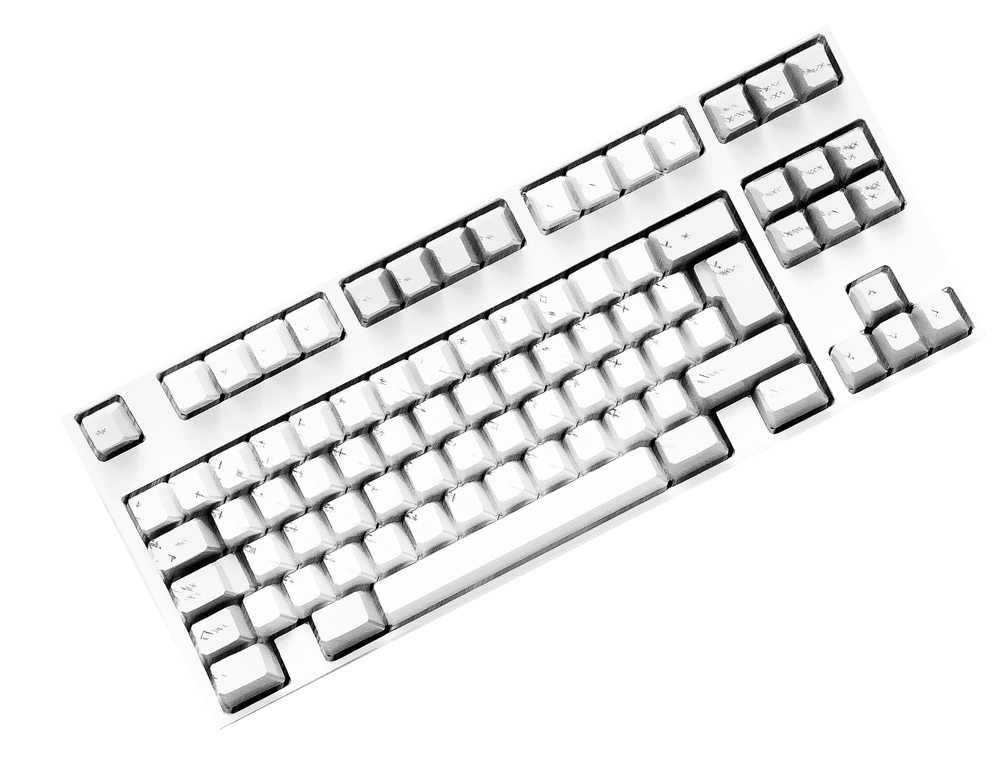
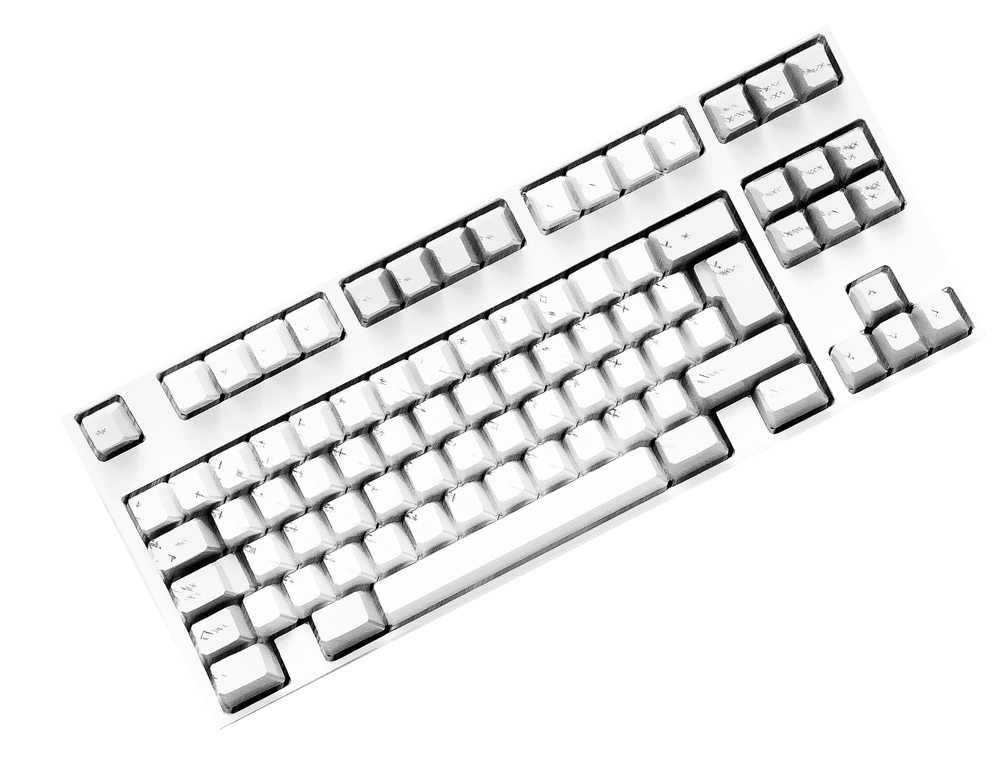

ДРУКУЙ
СВОЄ
Місце, де будь-який українець може створити авторську статтю, поділитись досвідом, власною думкою та знайти саме своїх читачів


Друкарня - це не новинний ресурс і не видання. В першу чергу, це безплатна платформа для читання, написання і поширення своїх авторських статей.

Читачі, яких цікавить тема саме вашої статті побачать її через зручну систему рекомендацій. Таким чином, можна охопити набагато більшу аудиторію читачів, навіть тих, які на вас ще не підписані.


 Про що
Про що можна
писати?
 

Статтю може створити кожен в зручному редакторі. Для цього не потрібно бути журналістом, письменником чи взагалі мати якийсь досвід в написанні тексту. Достатньо реєстрації на нашому ресурсі.


Наша база:

Російська мова заборонена. Ми прагнемо поширювати українську мову в створенні цікавого та різноманітного контенту. У кожного українця є можливість до цього долучитись.

У нас немає контекстної реклами. Зовсім. Ми маємо на меті створити платформу, де нічого не буде відривати користувачів від читання, або написання статті.

Незалежні автори можуть об’єднуватись в окрему “друкарню”, спілку авторів. Водночас, залишаючись незалежними, з власною аудиторією.
Пошук матеріалів здійснюється по тегах. Користувач може знайти цікаві йому статті у стрічці, або через систему рекомендацій.

Читач може залишати автору донат під кожною статтею. Також, він може писати коментарі, додавати статті в збережене і ставити вподобайки, тим самим популяризуючи автора і його працю.
Після створення сайту, ми плануємо створити мобільний додаток.
ЧИМ МИ ВІДРІЗНЯЄМОСЯ ВІД TELEGRAM?
Талановиті автори зараз масово створюють свої телеграм-канали. На жаль, багато крутих матеріалів залишаються непобаченими широкою аудиторію, адже вони змушені конкурувати не тільки з іншими каналами, а ще й з особистими повідомленнями користувача.

Telegram — це, по-перше, месенджер і він розвивається в саме цьому напрямку, створюючи анімовані стікери та емодзі.
Друкарня будується з метою дати автору всі інструменти для розвитку та залучення аудиторії. Це буде досягнуте методом додавання функціоналу специфічного для текстового, повільного контенту.

Детальне порівняння

Шляхи отримання контенту читачем

- Доступ до статей через пошук в Google.
- Система рекомендацій в стрічці.
- Підбірки кращих авторів, статей за темами.
- Підписка на автора.
- Пошук по тегах.
- Індивідуальна розсилка цікавих читачу статей в бот.
- Репости в інші соціальні мережі.
- При цитуванні вашої статті, зберігається посилання на оригінал.
- Бути підписаним на канал.
- Реклама.
- Через репости інших Telegram-каналів.
Спосіб написання статті
Повнофункціональний редактор тексту з ручним інтерфейсом.
- Написання звичайного довгого повідомлення з дуже бідним форматуванням.
- Стаття в Telegraph як окрема сторінка
*збирає набагато менше переглядів ніж звичайний пост.
Доступ до статті з пошуку в Google
Кожна стаття в Друкарні ранжується в пошуку Google та має всі необхідні метатеги для пошукових роботів.
Telegram не ранжує пости в Google.
Життєвий цикл статті
- Стаття викладена.
- Вона рівномірно набирає перегляди протягом кількох тижнів.
- Продовжує існувати через внутрішній пошук та рекомендації.
- Навіть через роки стаття буде видаватись в пошуку Google, тобто жити ВІЧНО!!!!!!!!!!!!!!111111!!
- Пост викладено.
- Швидко набирає перегляди.
- Через кілька днів пост стає майже не видимим для читача (тобто вмирає 💀).
Спосіб отримання донатів
Під кожною статтею та профілем авторів є кнопка “винагороди”.
Немає вбудованого функціонала для отримання донатів від аудиторії.
Способи індивідуалізації
Окрема сторінка-профіль, де можна поділитись детальною інформацією про себе.
- Назва каналу іменем автора.
- 255 символів опису.
- Маленька фотографія.
Спосіб перегляду всіх статей автора
Зручний список заголовків статей на сторінці самого автора в хронологічному порядку
- Довго скролити вверх
- Пошук за ключовими словами (якщо ти знаєш ці слова)
Коло інтересів читача
Читач може бути підписаний на необмежену кількість тем чи авторів. Нема причин відключати сповіщення на нову статтю (бо нема спаму), або відписатись від цікавого матеріалу.
Лімітована кількість каналів змішаних з особистими повідомленнями, що змушує людину вимикати сповіщення з телеграм-каналів.
Аудиторія
Аудиторія, що звикла читати об’ємні матеріали.
Аудиторія, що звикла до швидкого і стислого споживання контенту.
Функція "наздогоняючого прочитання"
Стаття може неодноразово траплятися читачу у рекомендаціях продовж місяців після написання, доки читач не відкриє статтю
Після того як стаття була показана читачу, вона ніколи не попадеться йому знову,
навіть після
натискання
кнопки швидкого скролу

Як знайти ваш блог?
Зручний пошук за заголовками, категорією, авторами та система рекомендацій.
Немає пошуку за тематиками каналів. Треба знати назву, юзернейм, або мати пряме посилання (через рекламу, сарафанне радіо)
Статистика
Статистика по блогу загалом плюс
- Час прочитання статті
- Кількість нових підписників з конкретної статті
- Джерела трафіку
- Інтереси аудиторії
Має загальну статистику всього каналу
Як отримати більшу аудиторію?
Писати нові, цікаві статті, можливо тестувати різни теми. Друкарня сама двигає вашу статтю (реклама і сарафанне радіо не є обов’язковими)
Тільки реклама і сарафанне радіо
Цитування
Можна виділити окремі тези, речення і поширити (з посиланням) до себе в соціальні мережі або у свою власну статтю.
Можливий тільки репост всієї статті або посилання на пост.
Плагіат
Дотримування акторського права. Те, що написали ви, належить вам і не може бути скопійоване.
В телеграмі нема фактичного захисту авторських прав.
Мотивування читача
Гейміфікація процесу читання мотивує читати більше та частіше (приклад вдалої гейміфікації - нагороди Monobank).
Немає ніякої системи, окрім сповіщень та кількість непрочитаних повідомлень, що може дратувати та мотивує тільки до очищення чатів.
Спілки авторів
Незалежні автори можуть об’єднатися в окрему “друкарню” (спілку), при цьому залишаючись незалежними з власною аудиторією + аудиторія самої спілки.
Можливість зробити декілька адмінів на каналі, але аудиторія єдина, тож адмін втрачає аудиторію, якщо перестає працювати на каналі
Засновники
Два українця народжених на Черкащині та Харківщині. Наше відношення до рф — презирство та зневага.
37-річна людина народжена в петербурзі російської федерації. Його відносини з фсб все ще під питанням.


Чому не Patreon?
Навіть текст неможливо прочитати! Про все інше в загалі мовчимо.


Чому не новинні ресурси?
Ми ж створюємо платформу, яка буде візуально приємна як читачу, так і автору. До того ж, статтю можна додати до обраного і читач може повернутись до неї згодом.
Ми ж створюємо платформу, яка буде візуально приємна як читачу, так і автору. До того ж, статтю можна додати до обраного і читач може повернутись до неї згодом.
Ми ж створюємо платформу, яка буде візуально приємна як читачу, так і автору. До того ж, статтю можна додати до обраного і читач може повернутись до неї згодом.